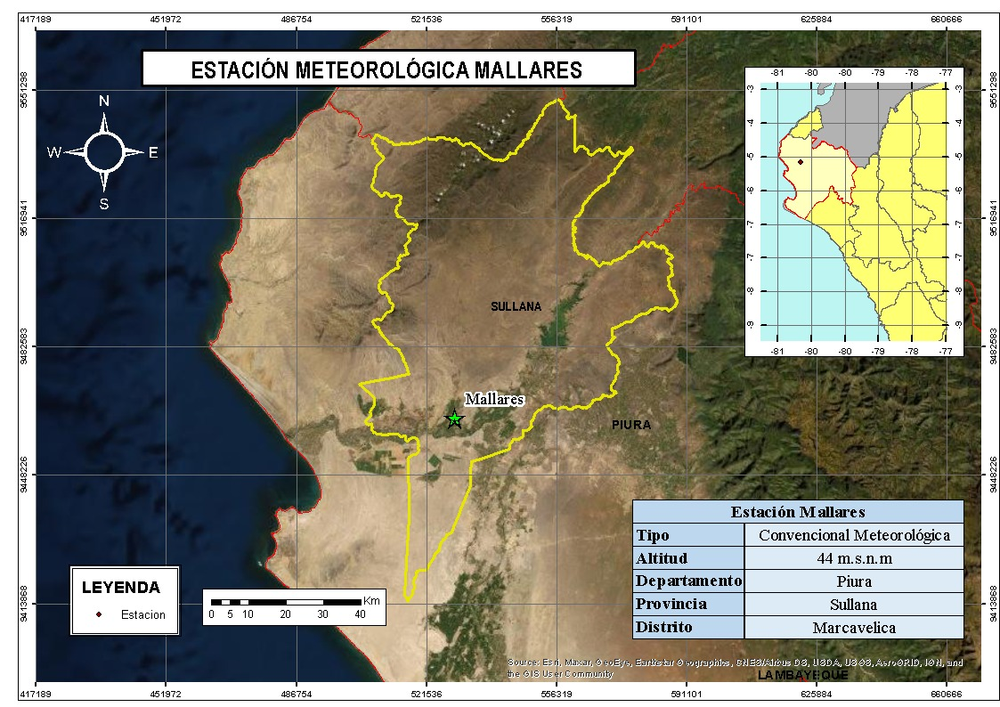

PRESENTACIÓN DEL EJERCICIO 3
INTEGRANTES
Lara Huapaya, José Alberto
Ceras Robles, Jose Alexander
Miguel Jurado, Milagros
Ramos Castillo, Elizabeth
Ingeniería Geográfica - UNMSM
Parte 3
Manipule los dataframe según se solicite
Se tiene el conjuntos de datos de precipitación diaria (período 1980 - 2013) de ciertas estaciones meteorológicas (raingaugeDataset.csv), donde cada una de estas están asociadas a un código único (p.e. qc00000208). Asimismo, se tiene una lista con los nombres, códigos, coordenadas y elevación de cada una de las estaciones (listRaingauge.csv).
A cada grupo le corresponde la siguiente estación:
- Grupo 01: MALLARES
- Grupo 02: TABACONAS
- Grupo 03: PUERTO PIZARRO
- Grupo 04: MORROPON
- Grupo 05: SAN MIGUEL
- Grupo 06: CHULUCANAS
- Grupo 07: LAMBAYEQUE
- Grupo 08: EL LIMON
- Grupo 09: EL SALTO
- Grupo 10: CHUSIS
De lo descrito anteriormente, se solicita:
- Determine la cantidad de missing values de la serie de tiempo a paso diario.
- Calcule la serie de tiempo de precipitación acumulada mensual (si el # de días con missing values, en un mes, supera el 10%, la precipitación acumulada mensual será considerado como un
NA). - Determine la cantidad de missing values de la serie de tiempo a paso mensual.
- Cree una función que calcule, a partir de los datos de preicpitación mensual, la climatología (Ene-Dic) para el período 1980-2010.
- Poltear (boxplot) la variabilidad de los valores mensuales (Ene-Dic) para el período 1980-2013.
La estación designada al Grupo 01 es MALLARES y antes de iniciar con los ejercicios se procederá a:
* Leer los archivos
* Filtrar, seleccionar y ordenarlos datos de la estación asignada
* Verificarla cantidad de datos
Las librerías a utilizar se irán cargando de acuerdo al ejercicio realizado
Lectura de archivos
data<-read.csv("https://raw.githubusercontent.com/ryali93/ProgramacionR/master/data/raingaugeDataset.csv")
data2<-read.csv("https://raw.githubusercontent.com/ryali93/ProgramacionR/master/data/listRaingauge.csv")
Se ha leído los archivos con la función read.csv.
Filtrar, seleccionar y ordenarlos datos
Se utilizará la librería dplyr que se encuentra en el paquete tidyverse
## CODIGO
## 1 qc00000208Con filter y select se obtuvo el código de la estación ubicada en el archivo data2.

Procesamiento:
datos<-data %>% select(date,qc00000208) %>%
mutate(date = as.Date(x = date,format="%d/%m/%Y")) %>%
rename(pp_Mallares = qc00000208,fecha= date) %>%
arrange(fecha) %>%
as_tibble(data)
datos## # A tibble: 12,419 x 2
## fecha pp_Mallares
## <date> <dbl>
## 1 1980-01-01 0
## 2 1980-01-02 0
## 3 1980-01-03 0
## 4 1980-01-04 0
## 5 1980-01-05 0
## 6 1980-01-06 0
## 7 1980-01-07 0
## 8 1980-01-08 0
## 9 1980-01-09 0
## 10 1980-01-10 0
## # ... with 12,409 more rowsSe crea un objeto denominado datos, con select se obtiene los datos de precipitación, además se crea una nueva columna con mutate que contendra los datos de la fecha que han sido transformados a una clase datos con as.Date y luego se renombra la variable con rename para fines prácticos.
Con la función arrange ordenamos los datos de la fecha y posteriormente cambiamos la estructura de los datos a un tibble.
Verificar la cantidad de datos
Para verificar si no falta ninguna fecha se procede a verificar la cantidad de datos con nrow.
## [1] 12419Se evalúa con un vector que contiene la misma secuencia de fechas.
## [1] 12419De lo descrito anteriormente, se solicita:
a. Determine la cantidad de missing values de la serie de tiempo a paso diario.
## [1] 558Se procede a filtrar los datos y con la función is.na nos devolverá aquellos datos que no tienen valores, por último contamos con nrow las filas para determinamos que tenemos 558 valores de NA.
b. Calcule la serie de tiempo de precipitación acumulada mensual (si el # de días con missing values, en un mes, supera el 10%, la precipitación acumulada mensual será considerado como un NA).
Cargamos la librería stringr que nos permitira utilizar la función str_sub()
pp_acmes<- datos %>% group_by(fecha = str_sub(fecha,1,7)) %>%
mutate(missv_p = sum(is.na(pp_Mallares))*100/n()) %>%
mutate( missv_na= ifelse(missv_p >= 10,NA, pp_Mallares)) %>%
summarise(pp_m=sum(missv_na)) %>%
mutate(fecha = as.Date(sprintf("%1$s-01",fecha)))
pp_acmes## # A tibble: 408 x 2
## fecha pp_m
## <date> <dbl>
## 1 1980-01-01 0
## 2 1980-02-01 0.5
## 3 1980-03-01 4.6
## 4 1980-04-01 29
## 5 1980-05-01 0
## 6 1980-06-01 0
## 7 1980-07-01 0
## 8 1980-08-01 0
## 9 1980-09-01 0
## 10 1980-10-01 0
## # ... with 398 more rowsInicialmente se agrupará los datos de acuerdo al mes, por lo cual usamos la función str_sub que permite substraerlos datos de acuerdo al caracter elegido,luego usamos la función de mutate esto nos permite crear nuevas columnas; la primera columna contendrá el % de valores NA por mes y la segunda columna evaluará de acuerdo a la condicional ifesle, dando como resultado solo la pp <=10.
La función summarise nos permite sumar los valores de precipitación por mes.
Librerías
Para graficar, se utilizo la librería ggplot2 en la cuál ingresaremos los parámetros.

Por consiguiente, se procederá a plotearlo:
library(ggplot2)
library(ggthemes)
PP<-ggplot(pp_acmes, aes(fecha, pp_m)) +
geom_line(color = "red")+
labs(y="Precipitación (mm)", x = "Años")+
ggtitle("Precipitación acumulada mensual")+
theme_wsj(base_size = 10)
c) Determine la cantidad de missing values de la serie de tiempo a paso mensual.
## [1] 26
d) Cree una función que calcule, a partir de los datos de precipitación mensual, la climatología (Ene-Dic) para el período 1980-2010.
Lo visualizamos:
## # A tibble: 12 x 2
## mes pp_m
## <fct> <dbl>
## 1 Jan 36.0
## 2 Feb 56.3
## 3 Mar 81.4
## 4 Apr 48.8
## 5 May 18.8
## 6 Jun 0.393
## 7 Jul 0.235
## 8 Aug 0.183
## 9 Sep 0.177
## 10 Oct 1.23
## 11 Nov 1.11
## 12 Dec 10.2Por consiguiente, se procede a plotearlo:
CC<-ggplot(Climatologia(1980,2010), aes(mes, pp_m)) +
geom_bar(stat = "identity", fill = "#F5C710")+
scale_x_discrete(labels = month.abb)+
labs(y="Precipitación (mm)", x = "Meses")+
ggtitle("Climatología de Enero a Diciembre para el período 1980-2010")+
theme(plot.title = element_text(vjust = 1, hjust = 0.3))+
theme(axis.title.y = element_text(vjust = 2))+
theme(axis.title.x = element_text(vjust = -1))+
theme_hc()También se puede calcular la precipitación media anual, el cúal se realiza de la siguiente forma:
Lo visualizamos:
## # A tibble: 31 x 2
## fecha pp_m
## <chr> <dbl>
## 1 1980 34.1
## 2 1981 25.9
## 3 1982 30.4
## 4 1983 2119.
## 5 1984 19.1
## 6 1985 7.5
## 7 1986 27.0
## 8 1987 341.
## 9 1988 37.2
## 10 1989 14.2
## # ... with 21 more rowsPor consiguiente, se procede a plotearlo:
PPAnual<-ggplot(PPPromedioAnual(1980,2010), aes(fecha, pp_m)) +
geom_bar(stat = "identity", fill = "#F5C710")+
labs(y="Precipitación (mm)", x = "Meses")+
ggtitle("Precipitación media anual del periodo 1980 - 2010")+
theme(plot.title = element_text(vjust = 1, hjust = 0.3))+
theme(axis.title.y = element_text(vjust = 2))+
theme(axis.text.x = element_text(angle = 90))+
theme_hc()
e) Poltear (boxplot) la variabilidad de los valores mensuales (Ene-Dic) para el período 1980-2013.
pp_month<- pp_acmes %>% mutate(fecha = as.Date(sprintf("%1$s-01",fecha))) %>%
dplyr::filter(fecha >= as.Date("1980-01-01") & fecha <= as.Date("2010-12-31")) %>%
mutate( mes = str_sub(fecha,6,7))
pp_month## # A tibble: 372 x 3
## fecha pp_m mes
## <date> <dbl> <chr>
## 1 1980-01-01 0 01
## 2 1980-02-01 0.5 02
## 3 1980-03-01 4.6 03
## 4 1980-04-01 29 04
## 5 1980-05-01 0 05
## 6 1980-06-01 0 06
## 7 1980-07-01 0 07
## 8 1980-08-01 0 08
## 9 1980-09-01 0 09
## 10 1980-10-01 0 10
## # ... with 362 more rowsPLOTEO
A<-ggplot(dplyr::filter(pp_month, fecha >= "1980-01-01" & fecha <= "2013-12-31"))+
geom_boxplot( aes(x=mes,y=pp_m, color = mes))+
ggtitle("Valores mensuales (Enero-Diciembre) para el período 1980-2013")+
xlab("Meses") + ylab("Precipitación (mm)") +
theme_igray()+
scale_x_discrete(labels = month.abb,name="Meses")+
scale_color_discrete(labels= month.abb,name="Meses")GRACIAS